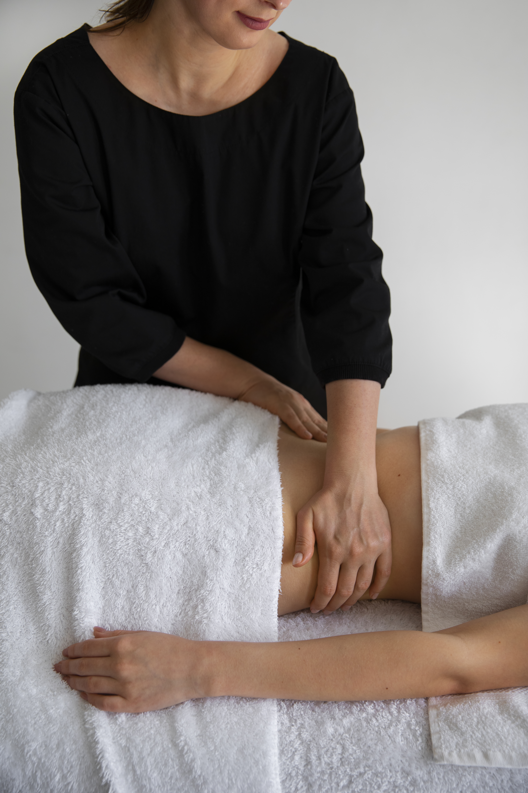

Drenaje linfático a domicilio en Bogotá
Después de una cirugía, con las piernas hinchadas al final del día o con la sensación de pesadez que deja estar muchas horas de pie, el drenaje linfático es de las terapias que más alivio dan. Y hacerlo en casa tiene una ventaja evidente: no tienes que moverte cuando menos ganas tienes de hacerlo.
Nuestro equipo hace drenaje linfático a domicilio en toda Bogotá, las 24 horas. Trabajamos con maniobras suaves y rítmicas, siguiendo las indicaciones de tu médico cuando se trata de un postoperatorio, y te explicamos en cada visita cómo va evolucionando la zona.

Drenaje postoperatorio a domicilio en Bogotá
Después de una liposucción, una abdominoplastia, una cirugía de mama u otra cirugía estética, el cuerpo acumula líquido e inflamación. El drenaje postoperatorio ayuda a movilizar ese líquido con maniobras suaves, siempre en los tiempos y con la frecuencia que indique tu cirujano.
Hacerlo en casa evita los traslados en los días en que más cuesta moverse. La terapeuta te ayuda a quitarte y ponerte la faja, revisa la zona y te avisa si nota algo que deba saber tu médico.
Drenaje linfático manual en Bogotá
El drenaje linfático manual es una técnica de masaje muy suave que estimula el sistema linfático para que mueva el líquido retenido. Es ideal para quienes sienten las piernas pesadas e hinchadas al final del día, retienen líquidos o pasan muchas horas de pie o sentados.
Se puede hacer en todo el cuerpo o enfocado en piernas, abdomen o brazos, y en casa la relajación es todavía mayor.

Drenaje venoso a domicilio en Bogotá
El drenaje venoso se concentra en la circulación de retorno de las piernas: la sangre que tiene que subir desde los pies hasta el corazón. Con maniobras ascendentes y suaves ayuda a aliviar la pesadez, los calambres nocturnos y la sensación de piernas cansadas.
Es muy útil para personas que pasan el día de pie o sentadas, y como complemento cuando el médico ya recomendó medias de compresión.
Por qué elegir nuestro servicio de drenaje linfático a domicilio
- No tienes que salir de casa recién operada ni con las piernas inflamadas.
- En el postoperatorio seguimos las indicaciones de tu cirujano y respetamos los tiempos que él defina.
- La terapeuta revisa la zona antes de cada sesión y te avisa si nota algo que deba ver tu médico.
- Coordinamos las sesiones según tu horario, incluso de noche o fines de semana.
Drenaje linfático a domicilio en estas zonas de Bogotá
Llevamos el servicio de drenaje linfático a domicilio a casas, apartamentos y oficinas en estos barrios y localidades, y en municipios cercanos. Atendemos las 24 horas.
- Usaquén
- Cedritos
- Santa Bárbara
- Toberín
- Chicó
- Chapinero
- Rosales
- Teusaquillo
- Galerías
- Barrios Unidos
- Salitre
- Modelia
- Fontibón
- Engativá
- Suba
- Niza
- Colina Campestre
- Kennedy
- Castilla
- Puente Aranda
Preguntas frecuentes sobre drenaje linfático a domicilio
¿Cuándo puedo empezar el drenaje después de una cirugía?
Lo define tu cirujano. Algunos lo indican desde los primeros días y otros prefieren esperar. Antes de la primera visita te pedimos que nos cuentes qué te recomendó, y seguimos esa indicación.
¿El drenaje linfático duele?
En general no. Las maniobras son suaves. En un postoperatorio la zona puede estar sensible, y por eso la terapeuta ajusta la presión y va preguntando cómo te sientes.
¿Cuántas sesiones de drenaje necesito?
Depende del motivo y de cómo responda tu cuerpo. En el postoperatorio suele hacerse una serie de sesiones; te damos una orientación en la primera visita y la ajustamos según la evolución.
¿Tengo que quitarme la faja para el drenaje?
Sí, durante la sesión se retira para trabajar la zona, y al terminar te ayudamos a ponértela de nuevo.
Agenda drenaje linfático a domicilio en Bogotá
Escríbenos por WhatsApp, cuéntanos qué necesitas y te enviamos la cotización y la disponibilidad.